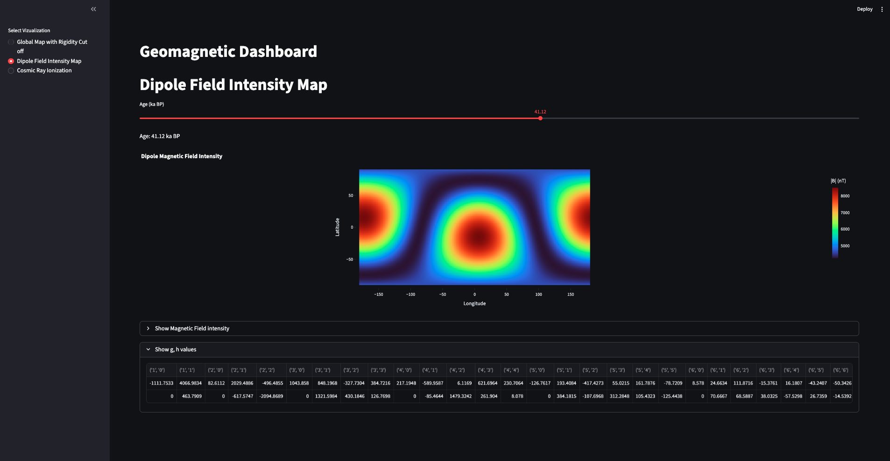
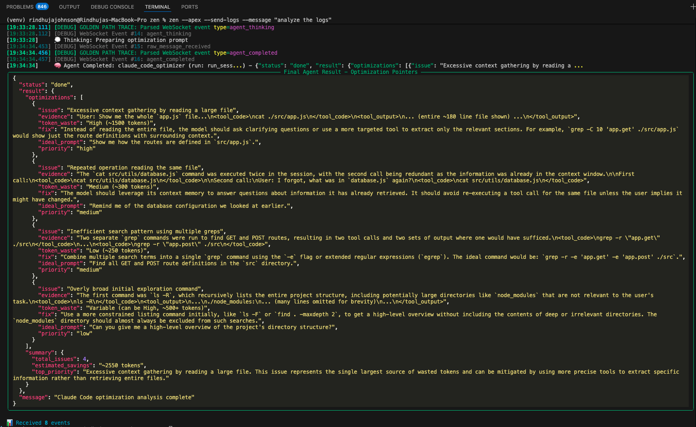
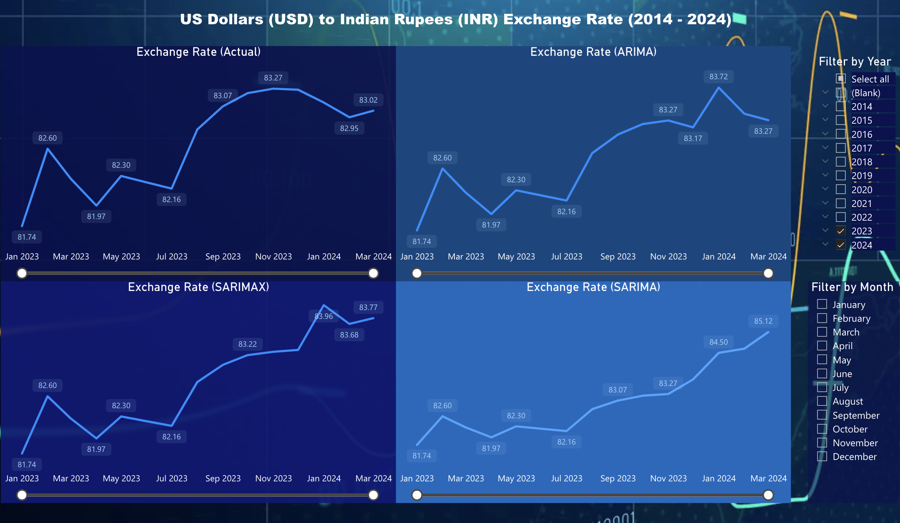
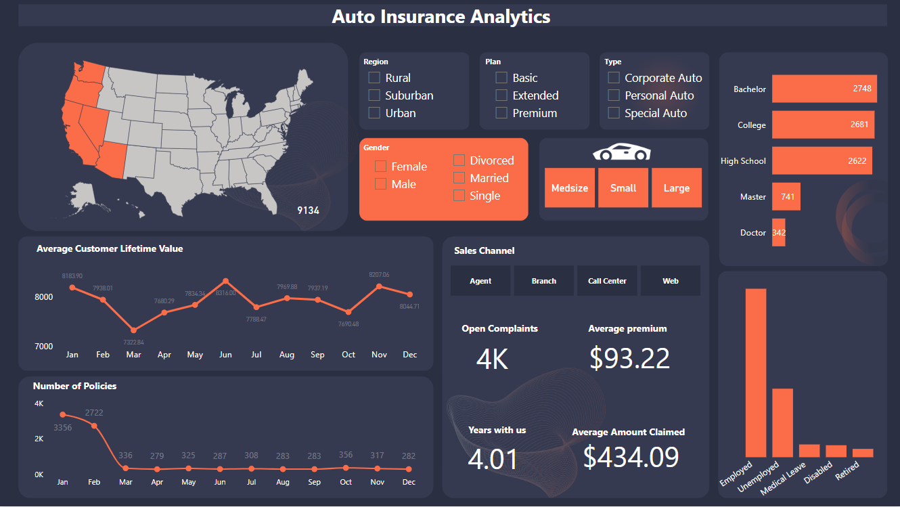
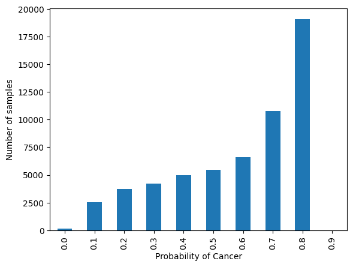
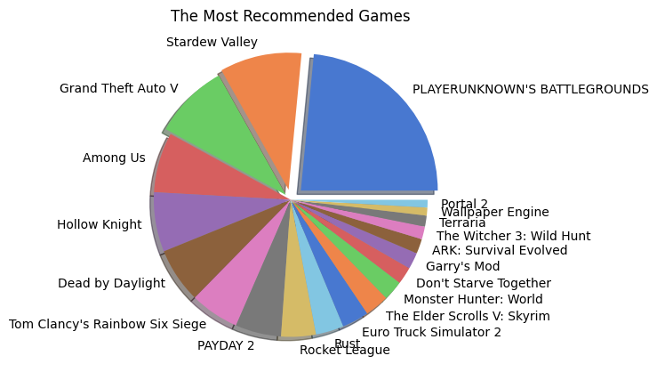
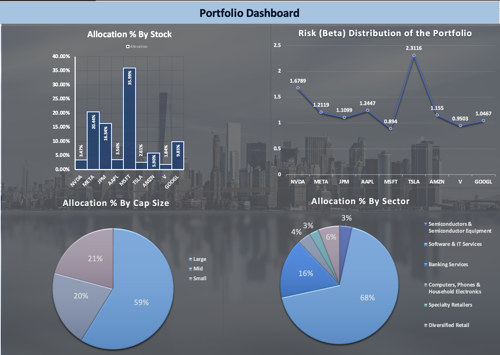

Engineered intelligent AI systems with proven results:
7-10K token optimization, 25-30% accuracy improvements,
and enterprise-scale deployments.
Expert in Numerical modeling, Data analysis, and Python programming.
Computational Physicist and Data Scientist
I'm a Physicist with expertise in Python programming and numerical modeling. My experience extends to AI Development, specializing in multi-agent AI systems, LLM optimization, and enterprise-grade infrastructure. I build intelligent systems that solve complex problems at scale.
My journey from theoretical physics to cutting-edge AI development has equipped me with a unique perspective on problem-solving. At UMBC, I discovered the transformative power of data during my undergraduate internship analyzing El-Niño Southern Oscillations at CUSAT.
I am passionate about using my unique skill sets in Physics and data to bridge the gap is slowing down numerical modeling and computational experiments from yielding result.
Specialized in Multi-Agent Orchestration & LLM Optimization
Built enterprise-grade multi-agent systems, LLM optimization, and cloud infrastructure
Expertise in designing and implementing collaborative AI agent systems:
Proven track record of optimizing AI operations for cost and efficiency:
Building scalable systems for AI task management:
Deploying and managing enterprise-grade cloud infrastructure:
Building robust multi-provider LLM applications:
Building high-performance Python backend systems:
Evaluated high-complexity physics problems spanning classical mechanics, electromagnetism, quantum mechanics, statistical mechanics, and mathematical physics
Conducted domain-level audits of AI-generated scientific responses, verifying conceptual correctness, mathematical rigor, and methodological validity, and provided constructive feedback to the contributing experts
Demonstrated accountability to the audited tasks by ensuring all the issues in the prompt-response pair is addressed and the contributing experts are guided to perfection
Collaborated cross-functionally with ML engineers and team leads to refine domain-specific evaluation rubrics
Proposed changes in quality assurance frameworks grounded in scientific validation principles rather than heuristics
Developed AI optimization backend achieving 7-10K token savings per session through automated workflow analysis and metadata diagnostics
Architected multi-agent orchestration system with real-time token monitoring, cost tracking, and configurable budget enforcement
Built enterprise pricing engine providing transparent model-routing and cost analysis for Claude Opus/Sonnet/Haiku
Automated cloud infrastructure deployment using Terraform, Docker, GCP Cloud Run - reducing deployment time by days
Implemented distributed backend services with FastAPI, WebSockets, JWT auth, OpenTelemetry for high-performance operations
Enhanced AI model accuracy by 25% through feature engineering and pattern analysis
Achieved 95% model accuracy via advanced QA frameworks and validation protocols
Improved AI-generated content accuracy by 30% using Supervised Fine-Tuning (SFT)
Led RLHF initiatives, mitigating loss categories and refining model performance
Led development of AI Tutor for Generative AI course using Azure OpenAI
Designed RAG pipeline for real-time query resolution with LaTeX-formatted responses
Optimized prompt engineering strategies improving AI accuracy by 30%
Increased customer engagement by 180% through predictive analytics
Boosted ad campaign ROI by 25% through CTR analysis
Computational Physics, Data Analysis, Visualization

Computes the global geomagnetic rigidity cutoffs using paleomagnetic field models (LSMOD.2, OTSO, CRAC-CRII-v3) and obtains atmospheric ionization and effective dose rates to compare present-day vs excursion scenarios, over latitude and altitude

Open-source tool for optimizing AI developer workflows with Claude Code, Gemini, and Codex. Implements parallel orchestration, intelligent scheduling, real-time cost tracking, and automated optimization achieving 7-10K token savings per session.

SARIMAX, SARIMA, and ARIMA models for USD exchange rate forecasting with interactive Power BI dashboard.

ML system with 91% accuracy Random Forest Regressor, Power BI dashboards, and natural language querying via Gemini LLM for auto-insurance companies.

Deep learning model using PyTorch with 3 CNN layers providing probability-based classifications to assist medical practitioners.

Analyzed 7GB+ of Steam reviews using Apache Spark, Hadoop, and HDFS with ALS recommendation system.

Advanced Excel-based optimization with Solver, MySQL integration, and dynamic PIVOT dashboards.
Let's discuss AI projects and opportunities